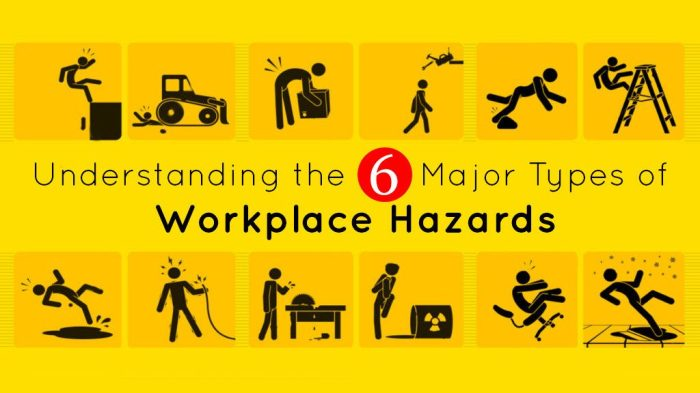

Alasan kami memilih Perusahaan Garment
Latar Belakang: Penerapan K3 di Industri Garmen
Kami memilih perusahaan garmen dengan jumlah pekerja sekitar 100 orang karena sektor ini memang dikenal sebagai industri padat karya yang sangat bergantung pada tenaga manusia. Kegiatan sehari-hari di perusahaan tersebut mulai dari menjahit, memotong kain, hingga proses pressing mengandung berbagai risiko kecelakaan dan penyakit akibat kerja, baik yang bersifat fisik, kimia, ergonomis, maupun psikososial. Dengan jumlah pekerja sebanyak itu, perusahaan garmen sudah termasuk dalam kategori yang wajib menerapkan Sistem Manajemen Keselamatan dan Kesehatan Kerja (SMK3) sesuai dengan PP No. 50 Tahun 2012. Jadi, aspek K3 di sini bukan hanya penting untuk melindungi pekerja, tapi juga merupakan kewajiban hukum. Alasan saya memilih sektor ini adalah karena industri garmen di Indonesia memiliki peran penting dalam perekonomian nasional, baik sebagai penyerap tenaga kerja maupun sebagai salah satu sektor unggulan ekspor. Namun, karena sifatnya yang padat karya, para pekerja rentan mengalami berbagai kecelakaan kecil seperti tertusuk jarum atau luka bakar, serta penyakit akibat kerja seperti gangguan muskuloskeletal, masalah penglihatan, dan gangguan pernapasan akibat debu kain. Sayangnya, kesadaran akan pentingnya penerapan K3 di sektor ini masih sering kurang, sehingga risiko-risiko tersebut bisa terus terjadi. Dengan kondisi seperti ini, perusahaan garmen berskala menengah menjadi contoh yang tepat untuk melihat bagaimana penerapan K3 berjalan secara nyata. Meskipun kompleksitasnya tidak sebesar industri berat, perusahaan ini cukup representatif untuk menunjukkan betapa pentingnya manajemen K3, baik dalam melindungi pekerja, meningkatkan produktivitas, maupun mendukung daya saing produk garmen Indonesia di pasar global.
Indikasi Bahaya
Perusahaan garmen ini menerapkan HIRARC (Hazard Identification Risk Assessment and Risk Control) untuk mengidentifikasi, menilai, dan mengendalikan bahaya pada aktivitas rutin maupun non-rutin,
dengan tujuan meminimalisir risiko kecelakaan dan bahaya kesehatan kerja bagi pegawai.
Proses identifikasi dan pengendalian bahaya meliputi:
1. Menulis proses pekerjaan dari awal hingga akhir di setiap bagian, menganalisis potensi bahaya pada setiap jenis pekerjaan, dan menilai tingkat risikonya berdasarkan kriteria yang telah ditetapkan.
2. Melakukan tindakan pengendalian pada setiap langkah pekerjaan yang melibatkan manusia, mesin, dan lingkungan kerja.
3. Memastikan kepatuhan dan pelaksanaan prosedur sesuai SOP berdasarkan ISO 14001, sistem manajemen lingkungan.
Setelah pemetaan risiko, dilakukan sosialisasi instruksi kerja, prosedur, dan pelatihan untuk pencegahan bahaya K3.
Apabila terjadi kecelakaan kerja, dilakukan penyelidikan dengan proses berikut:
1. Melakukan wawancara terhadap saksi di tempat kejadian perkara (TKP).
2. Menganalisis sebab insiden secara seksama.
3. Memastikan kepatuhan terhadap prosedur dan SOP.
4. Membuat berita acara kejadian, tinjauan lokasi (rekonstruksi), dan memastikan adanya pihak yang bertanggung jawab atas insiden tersebut.
Tipe Kecelakaan
Tipe kecelakaan yang bisa terjadi di workshop garmen pada dasarnya adalah sebagai berikut :

1. Kabel pada mesin tidak pada tempatnya (Tersandung kabel, kabel dapat mengalami kerusakan dan konsleting)
2. Terbatasnya tempat untuk setrika, sehingga setrika diletakkan langsung pada alas setrika. (Menyebabkan kebakaran kecil hingga besar)
3. Pengatur suhu pada setrika tidak berfungsi. (Pengguna tidak tahu seberapa panas setrika yang sedang dipakai, sehingga memiliki potensi kebakaran)
4. Penggunaan mesin potong kain. (Jari atau tangan terpotong.)
5. Pelindung mesin obras yang tidak ditutup saat digunakan. (Jarum patah bisa mengenai mata dan jari bisa tertusuk jarum atau terkena pisau mesin obras.)